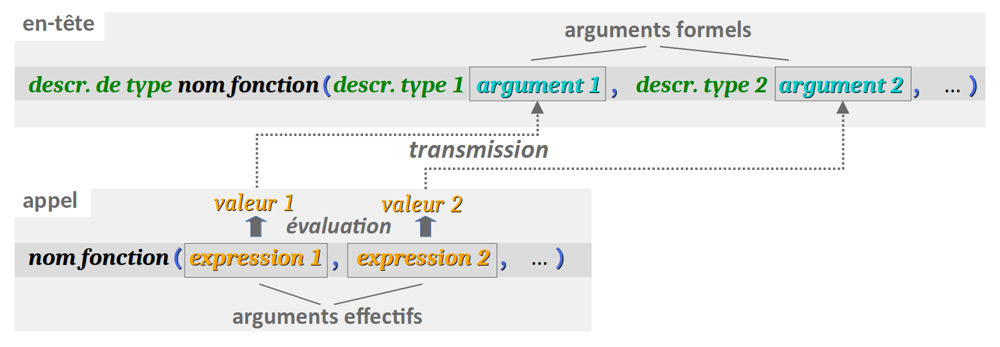

Après l'étude des aspects fondamentaux des notions de pointeur et de référence (cf. chap. C5‑I ), on aborde dans le présent chapitre les applications de ces éléments de langage.
Dans la pratique, ces applications sont très nombreuses, notamment pour la manipulation des tableaux et des fichiers. Toutefois, ces techniques de codage seront étudiées dans des chapitres ultérieurs car elles nécessitent préalablement un exposé détaillé des structures de données manipulées.
Ici, on se limitera à des applications directes sur des éléments juste un peu plus complexes que de simples données élémentaires. En particulier, on exposera :
- la transmission par adresse d'un argument de fonction, qui sera comparée avec la transmission par référence présentée aux chapitres C4‑I et C5‑I ;
- l'utilisation d'un pointeur de pointeur, car un pointeur est lui‑même une donnée (de type dérivé) et comme toute donnée, elle peut être pointée.
Loin d'être seulement académiques, ces applications sont fréquentes en codage professionnel, notamment pour la manipulation des données des tableaux multidimensionnels (cf. chap. C5‑IV). Elles doivent être bien maîtrisées à l'issue de ce chapitre.
Ce chapitre est également l'occasion d'aborder quelques applications et notions avancées des pointeurs :
- l'emploi d'un pointeur de fonction ; en effet, l'identificateur d'une fonction étant lui‑même converti en un pointeur vers le segment mémoire
.textoù le code exécutable de la fonction est stockée, un pointeur de fonction est aussi un pointeur de pointeur ; - les notions de pointeur nul et de pointeur générique, qui permet de pointer a priori n'importe quel type de donnée, quelle que soit sa structure.
Ces notions ne deviennent indispensables que dans le cadre d'opérations complexes. Néanmoins, il est utile d'en prendre connaissance dès maintenant pour mesurer l'étendue les potentialités du concept de pointeur. Dans cet objectif, la présentation de ces aspects reste ici superficielle.
Applications élémentaires
Transmission d'arguments d'une fonction par adresse
On rappelle que :
- la syntaxe usuelle de codage d'une fonction implique une transmission par valeur des arguments effectifs de l'expression d'appel aux arguments formels de déclaration et définition de la fonction (cf. chap. C4‑I ) ; il n'est donc pas possible ainsi de modifier la valeur d'une variable qui serait passée comme argument effectif dans l'appel d'une telle fonction ; 
- pour qu'une fonction puisse modifier la valeur d'une variable passé comme argument effectif, on peut mettre en œuvre une transmission par référence en langage C++, en déclarant les arguments formels comme des références (cf. chap. C4‑I pour la syntaxe et chap. C5‑I pour l'explication du mécanisme de transmission).
En langage C aussi, on peut modifier la valeur d'une variable passée comme argument effectif lors de l'appel d'une fonction : il suffit d'opérer avec un pointeur sur cette variable. C'est ce qu'on appelle la transmission par adresse.
La syntaxe de la transmission par adresse d'argument d'une fonction obéit au même principe général que celui de la transmission par référence, mais avec des pointeurs.
- Dans l'en‑tête de la fonction, tout argument formel transmis par adresse est déclaré comme un pointeur non initialisé, c'est-à-dire via la syntaxe :
descripteur de type * identificateur du pointeur - Dans le corps de définition de la fonction, on peut coder des expressions avec ce pointeur, et en particulier le déréférencer pour lire ou écrire la valeur de la donnée qu'il pointe.
- Dans l'appel de la fonction, l'argument effectif correspondant à cet argument formel doit nécessairement être une l‑value, c'est‑à‑dire typiquement une adresse de variable de la forme
&identificateur de variable. C'est cet argument effectif qui constitue la valeur initiale de pointeur affectée à l'argument formel correspondant au tout début de l'exécution de l'appel.
Reprenons l'exemple académique de la fonction swapInt qui permute la valeur de deux variables, proposée pour illustrer la syntaxe du passage d'argument par référence en C++ (cf. chap. C5‑I ).
Rappelons que si l'on code le programme comme ci‑dessous :
#include <stdio.h>
void swapInt(int a, int b) { // warning: THIS DOES NOT WORK!
int c = a;
a = b;
b = c;
}
int main(void) {
int nb1 = 1, nb2 = 2;
printf("BEFORE swap: nb1 = %d nb2 = %d\n", nb1, nb2);
swapInt(nb1, nb2);
printf(" AFTER swap: nb1 = %d nb2 = %d\n", nb1, nb2);
}
l'exécution n'est pas satisfaisante (les variables nb1 et nb2 restent inchangées). En effet, lors de l'appel de la fonction swapInt (ligne n° 9), les valeurs des arguments effectifs nb1 et nb2 stockées dans le segment .data sont affectées aux arguments formels a et b de la fonction, qui sont mémorisés temporairement dans la pile, un peu comme si le programme exécutait les instructions :
-
int a = nb1; -
int b = nb2;
C'est donc dans la pile que la permutation des valeurs est opérée par la fonction, et non pas dans le segment .data.
En utilisant des pointeurs, le programme devient :
#include <stdio.h>
int nb1 = 1, nb2 = 2;
void swapInt(int * p, int * q) { // arguments are pointers
int c = *p;
*p = *q;
*q = c;
}
int main(void) {
printf("BEFORE swap: nb1 = %d, nb2 = %d\n", nb1, nb2);
swapInt(&nb1, &nb2);
printf(" AFTER swap: nb1 = %d, nb2 = %d\n", nb1, nb2);
return 0;
}
Lors de l'appel de la fonction swapInt (ligne n° 9), comme ses arguments effectifs sont des adresses de variables, leur transmission aux arguments formels de la fonction vient compléter la déclaration de ces derniers :
-
int * p = &nb1; -
int * q = &nb2;
Depuis la pile, les arguments formels p et q pointent alors respectivement sur arguments effectifs nb1 et nb2 dans le segment .data. C'est donc dans ce segment que la permutation des valeurs est opérée et ainsi, le programme devient effectif.
Comparaison avec la transmission par référence
On a vu au chapitre C4‑I que la transmission par référence est très simple à coder.
- Dans l'en‑tête de la fonction (prototype et définition), il suffit de déclarer les arguments formels.
- Pour le reste du code – corps de définition de la fonction et expressions d'appels – rien ne change par rapport à la syntaxe de la transmission par valeur, au détail près que les arguments effectifs doivent être réduits à des identificateurs de variables déclarées.
En comparaison, le codage d'une fonction à transmission par adresse est plus technique. En plus de déclarer déclarer les arguments formels comme des pointeurs dans l'en‑tête de la fonction (prototype et définition), il faut :
- dans le corps de la fonction, employer l'opérateur de déréférencement pour manipuler les données pointées par les arguments passés par adresse ;
- dans un appel de fonction, employer l'opérateur d'adresse pour passer les arguments effectifs.
Mais cette technicité présente un avantage en termes de lisibilité du code. En effet, dans un appel de fonction, l'emploi de l'opérateur d'adresse devant un argument effectif explicite le fait que la fonction modifie la valeur de cet argument. Si la transmission était opérée par référence, il faudrait se reporter à l'en‑tête de la fonction pour savoir qu'une modification intervient.
Pointeur de pointeur
On a vu au chapitre C5‑I qu'un pointeur déclaré est une donnée à part entière avec, en particulier, une adresse. Rien n'interdit donc de déclarer un pointeur qui pointe sur cette adresse.
La déclaration d'un pointeur de pointeur obéit à une syntaxe similaire à celle pour déclarer un pointeur « ordinaire » (cf. le lien supra) mais en y codant deux symboles * au lieu d'un seul, donc ainsi :
descripteur de type ** identificateur [=
expression];
Si p_a est une donnée préalablement déclarée de type int* (pointeur d'entier standard) qui pointe sur une donnée a de type int, alors l'instruction :
int ** pp_a = &p_a;
déclare une variable pp_a qui pointe sur l'adresse de pa.
On peut aussi coder cette déclaration :
int* * pp_a = &p_a;
afin de mieux visualiser le fait que les valeurs pointées par pp_a sont de type int*.
Déréférencement simple et double
On peut appliquer une ou deux fois (par composition) l'opérateur de déréférencement * à un pointeur de pointeur.
Si pp_a est un pointeur de pointeur déclaré comme supra, alors :
- l'expression
*pp_adonne la valeur dep_a, c'est‑à‑dire l'adresse dea; - l'expression
**pp_adonne la valeur dea.
Intérêt
La notion de pointeur de pointeur est utile pour effectuer des opérations systématiques sur des tableaux bidimensionnels (par exemple, des matrices). Grâce à ce genre de types, on peut donc coder des fonctions qui modifient des tableaux en prenant pour argument formel un pointeur de tableaux – cf. les chap. C5‑III et C5‑IV .
Contrairement à un pointeur, une référence n'est pas une donnée. On ne peut donc pas déclarer un « pointeur de référence ».
Applications avancées
Pointeur de fonction
Pour bien comprendre la notion de pointeur de fonction, il faut savoir qu'en langages C et C++, dans le code source d'un programme, hormis lors de sa déclaration, toute occurrence de l'identificateur de fonction employé seul, c'est‑à‑dire sans liste d'arguments effectifs délimitée par des parenthèses, est implicitement converti par le compilateur en un pointeur dans le segment .text (cf. chap. C4‑II ) sur la première instruction machine de la fonction désignée par cet identificateur. Il s'agit donc d'un pointeur de fonction et cette notion peut être exploitée dans des déclarations et des manipulations (affectations, déréférencements, passages d'argument de fonction, etc.)
Déclaration d'un pointeur de fonction
Un pointeur de fonction est un pointeur dont la valeur est l'adresse que le compilateur attribue à la première instruction machine d'une fonction dans le segment .text du programme.
En langages C et C++, on déclare un tel pointeur via la forme syntaxique :
descripteur de type (*
identificateur)
(liste de types)
[
=
expression
]
;
Dans cette syntaxe :
- le descripteur de type spécifie le type des valeurs retournées par les fonctions que le pointeur peut pointer ;
- l'identificateur désigne le pointeur de fonction déclaré ;
- la liste de types est celle des descripteurs de types des arguments formels pris par les fonctions que le pointeur peut pointer – ces descripteur de type étant séparés les uns des autres par le délimiteur
,; - l'expression (facultative) affecte une valeur initiale au pointeur déclaré ; elle peut être soit un autre pointeur de fonction, soit un identificateur de fonction, avec dans tous les cas l'obligation que cette fonction ait la même forme (valeur retournée, nombre et types de arguments) que celle imposée par les éléments de déclaration ci‑dessus.
Dans le code académique ci‑dessous :
int sum(int a, int b) {return a + b;}
int (*p_f) (int, int) = sum;
- on déclare d'abord la fonction
sumqui retourne une valeur entière égale à l'addition des valeurs de ses deux arguments entiers ; - puis on déclare
p_f, un pointeur de fonction rendant une valeur entière et prenant deux arguments entiers, et on donne à ce pointeur la fonctionsumcomme valeur initiale.
Mais notons bien que le pointeur p_f pourrait pointer sur n'importe quelle autre fonction de même forme, c'est-à-dire prenant deux arguments entiers et rendant pour valeur un entier. Ainsi, on pourrait coder par la suite :
int dif(int a, int b) {return a - b;}
*p_f = dif;
Plus la déclaration d'un pointeur de fonction est complexe, plus il est opportun de l'effectuer via un nouveau type, grâce au mot‑clef typedef (cf. chap. C3‑I ).
Déréférencement d'un pointeur de fonction
Le déréférencement d'un pointeur de fonction est une expression qui implémente un appel de la fonction qu'il pointe. La syntaxe d'une telle opération recourt aux parenthèses comme dans la déclaration d'un pointeur de fonction (mais sans le descripteur de type) :
(*
identificateur)
(liste des arguments effectifs)
En reprenant les déclarations de l'exemple académique précédent (lignes nº 10 & 11), l'instruction ci‑dessous :
result = (*p_f) (2, 3);
affecte à une variable entière (déclarée préalablement) result la valeur rendue par la fonction pointée sum avec pour ses deux arguments effectifs respectivement les valeurs 2 et 3.
Application académique : une calculatrice en ligne
Pour comprendre l'intérêt des pointeurs de fonctions, examinons le programme ci‑dessous, qui implémente une calculatrice rudimentaire effectuant en boucle les opérations arithmétiques usuelles saisies par l'utilisateur en notation « mathématique » directe.
#include <stdio.h>
#include <stdlib.h>
typedef int (* FunctionPointer)(int, int);
int sum(int a, int b) {return a + b;}
int dif(int a, int b) {return a - b;}
int mul(int a, int b) {return a * b;}
int dvd(int a, int b) {if (b != 0) return a / b; else exit(1);}
FunctionPointer functionMap(char operatorSymbol) {
switch (operatorSymbol) {
case '+' : return sum;
case '-' : return dif;
case '*' : return mul;
case '/' : return dvd;
default : exit(0);
}
}
int main(void) {
char o; // operator symbol
printf(" + - * / calculator / * - + \n");
do {
int a, b; // operands
printf("> ");
scanf("%d %c %d", &a, &o, &b);
printf("= %d\n", (*functionMap(o)) (a, b));
}
while (o == '+' || o == '-' || o == '*' || o == '/');
return 0;
}
On peut faire les observations suivantes.
- À la ligne nº 4, on déclare un type synonyme de pointeur de fonction à valeurs retournées de type
intet prenant deux arguments de typeint, comme dans les exemples académiques précédents. On le nommeFunctionPointeravec une majuscule comme pour tout identificateur de types. - Aux lignes nº 6 à 9, on définit les quatre fonctions
sum,dif,muletdvdcorrespondant respectivement aux opérateurs arithmétiques+ - * /du langage C. - Aux lignes nº 11 à 19, on définit la fonction
functionMapqui retourne le pointeur sur la fonction correspondant au symbole de l'opérateur passé en argument (de type caractère). - À la ligne nº 27, par appel de la fonction
scanf, on lit l'opération saisie par l'utilisateur comme en notation mathématique. On mémorise les valeurs entières des deux opérandesaetbet le symboleode l'opération. - À la ligne nº 28, on affiche le résultat de l'opération, calculé par déréférencement du pointeur de fonction retourné par la fonction
functionMapappliquée au caractèreosaisi par l'utilisateur.
functionMap définie ensuite. a et b saisis par l'utilisateur. En exécutant ce programme sur OnlineGDB, on obtient en sortie standard, par exemple :
+ - * / calculator / * - + > 2 + 3 = 5 > 7 * 8 = 56 …
Pointeur générique
On a vu que tout pointeur possède a priori un type spécifique à la donnée ou fonction sur laquelle il pointe. Mais cette contrainte se révèle parfois rédhibitoire, notamment si l'on souhaite pointer des données de différents types ou des fonctions ayant un nombre différent d'arguments.
Pour y remédier, les langages C et C++ permettent de déclarer un pointeur générique, c'est-à-dire non typé, codé par le descripteur void *.
Un tel pointeur peut alors a priori pointer sur n'importe quel type de donnée. Par affectation, il suffit de lui donner une adresse ou la valeur d'un pointeur typé, quel que soit ce dernier.
En revanche, un pointeur générique est moins facilement manipulable qu'un pointeur typé. Puisque rien ne permet de déterminer ce qu'il pointe hormis une adresse, il ne peut être l'objet d'aucune opération arithmétique (incrémentation, etc.) ni d'aucun déréférencement direct. Pour obtenir le contenu de la mémoire qu'il pointe, il faut procéder à une conversion explicite vers le type de pointeur souhaité.
Considérons le programme académique ci‑dessous :
#include <stdio.h>
#include <stdlib.h>
int main(void) {
int a = 5;
float b = 0.1;
void * p = &a;
printf("a = %d\n", *((int*) p)); // displays 5
p = &b;
printf("b = %g\n", *((float*) p)); // displays 0.1
return 0;
}
Après avoir déclaré deux variables a et b de types différents, on déclare le pointeur générique p et on lui affecte l'adresse de l'entier standard a (ligne nº 7). Ensuite :
- on peut obtenir la valeur de
apar déréférencement dep, mais seulement après une conversion explicite dans le typeint*(ligne nº 8) ; - puis on peut affecter à
pl'adresse debet obtenir sa valeur, par déréférencement dep, mais seulement après une conversion explicite dans le typefloat*(ligne nº 10) ;
Pointeur nul
Le langages C et C++ définissent également le pointeur nul qui est codé NULL ou tout simplement 0.
Le pointeur nul correspond à une adresse « zéro » inexistante qui, bien entendu, ne peut pas être déréférencée mais qui permet de faire des tests à zéro.
C'est également la valeur retournée par les fonctions de recherche d'élément dans un tableau en cas d'échec de la recherche.
Après la déclaration :
int * p = NULL;
on peut coder une bifurcation de la forme :
if (p != NULL)
…
pour vérifier si, entre‑temps, le pointeur p a fait ou non l'objet d'une nouvelle affectation.